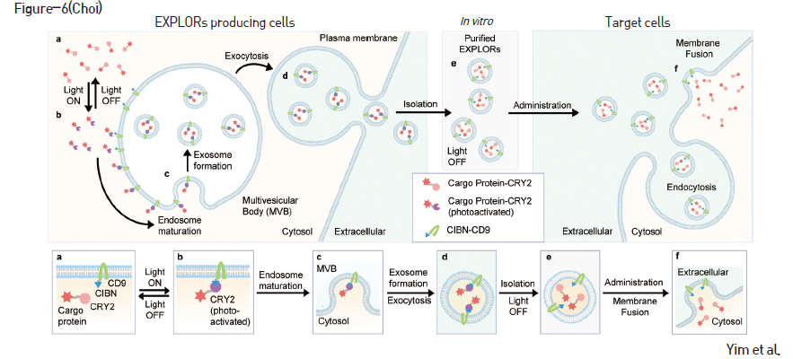

주제별 연구성과
주제별 연구성과
KAIST RESEARCH ACHIEVEMENTS
엑소솜에 실을 수 있는
단백질 약물 전달 기술
바이오 및 뇌공학과 최철희
요약
본 연구팀에서는 빛을 이용하여 원하는 생체활성 단백질을 엑소솜에 특이적으로 탑재할 수 있는 ‘EXPLOR (Exosomes for protein loading via optically reversible protein-protein interaction)’ 원천기술을 개발하였다. 엑소솜의 주요 마커인 CD9, CD63, CD81, CD82 등의 tetraspanin과 생체활성 단백질에, 푸른빛에 의해 서로 결합하는 단백질인 CRY2와 CIBN을 각각 융합시켜 푸른빛을 쬐어줬을 때 생체활성 단백질이 엑소솜 안으로 들어갈 수 있도록 개조하였다. 이는 엑소솜을 생산하는 세포에 해당 단백질들을 안정적으로 발현시키고 푸른 빛을 쬐어주는 것만으로도 용이하게 생체활성 단백질이 탑재된 세포외소낭을 대량 생산할 수 있는 기술이다.
연구배경
최근 나노기술의 발전과 더불어 기존 약물들의 부작용을 최소화하고 효능을 극대화하기 위한 신개념의 바이오약물 및 약물전달시스템들이 개발되고 있으며, 이 중 세포 간 신호전달의 주요한 매개체인 세포외소낭 이 그 응용 가능성으로 인해 주목받고 있다. 세포 외소낭은 100–1000nm 크기의 지질이중층으로 둘러 쌓여있는 구형의 물체로서 구조, 생화학적 특성에 따라 다양하게 분류되는데, 50–200nm 크기의 주로 세포막에서 발아되는 미세소포체와 세포 내부의 다소포체에서 유래되는 엑소솜으로 나뉜다. 엑소솜은 세포 내에서 방출되는 안정적인 단백질 운반체로서 쉽게 만들어지고 분리가 용이하기 때문에, 약물전달 측면에 있어서 큰 잠재성을 가지고 있다.
연구내용
본 연구팀에서는 빛을 이용하여 원하는 생체활성 단백질을 엑소솜에 특이적으로 탑재할 수 있는 ‘EXPLOR (Exosomes for protein loading via optically reversible protein-protein interaction)’ 원천기술을 개발하였다. 엑소솜의 주요 마커인 CD9, CD63, CD81, CD82 등의 tetraspanin과 생체활성 단백질에, 푸른빛에 의해 서로 결합하는 단백질인 CRY2와 CIBN을 각각 융합시켜 푸른빛을 쬐어줬을 때 생체활성 단백질이 엑소솜 안으로 들어갈 수 있도록 개조하였다. 이는 엑소솜을 생산하는 세포에 해당 단백질들을 안정적으로 발현시키고 빛을 쬐어주는 것만으로도 용이하게 생체활성 단백질이 탑재된 세포외소낭을 대량 생산 가능하다. 본 연구팀은 빛을 이용하여 치료 표적 단백질이 엑소솜으로 탑재되는지 여부를 확인하기 위하여, 형광 단백질인 mCherry 단백질에 CRY2 단백질을 결합하고, EGFP 단백질에 CIBN 단백질과 CD9 단백질을 결합하여 HEK293T 세포에 발현하였다. 공초점 현미경을 이용하여 푸른 빛 자극을 주었을 때, mCherry 형광 단백질들은 엑소솜의 생성과정 속에 포함되는 엔도솜 (Endosome) 등으로 이동하는 것을 확인하였다. 이를 바탕으로, 연구팀은 460nm LED가 장착된 세포배양 인큐베이터를 설계하여 세포 배양시 지속적인 푸른빛을 조사하도록 만들었으며, 정량적인 빛의 세기 조절을 통해 20에서 50μW cm-2 사이 파워의 460nm LED 조사 조건에서 가장 많은 mCherry 단백질이 엑소솜에 탑재되는 것을 확인 함. 본 연구의 EXPLOR 기술에 의한 단백질의 엑소솜 탑재 수율 분석을 위해, luciferase를 엑소솜에 탑재하여 luciferase assay를 통해 그 활성을 측정한 결과, 기존에 알려진 타 기술에 비해 수백 배 가량 더 높은 효율로 탑재됨을 확인함. 또한, EXPLOR 기술을 통해 엑소솜에 탑재된 단백질은 기존 방법에 비해 월등히 높은 효율로 세포내 또는 생체내로 전달됨을 검증하였다.
아래그림참조
단백질과 결합되어 있다. (b) 푸른빛 자극에 의해 CRY2와 CIBN 사이에 가역적인 단백질-단백질 결합이 일어나고, 지속적인 푸른빛 자극은 세포내 타겟 단백질을 세포막의 안쪽 표면 혹은 세포내소낭 (Endosome)의 막 표면으로 유도한다. (c) 그 후 세포내소낭이 성숙하게 되면, 자연스레 다소포체 (Multivesicular bodies)를 형성하고 그 내부에 수송하고자 하는 타겟 단백질이 포함된 엑소솜이 형성 된다. (d) 이 엑소솜은 세포의 외포작용 (Exocytosis)을 통해 방출되며, (e) in vitro 환경에서 쉽게 분리하고 정제해 낼 수 있다. (f) 이후, 분리된 엑소솜을 타겟 세포에 처리하면 세포막 융합 혹은 내포작용 (Endocytosis) 등을 통해 엑소솜 내부의 단백질들을 효율적으로 전달하게 된다.
 EXPLOR 기술의 모식도. EXPLOR 생산 세포 내에서, (a) 수송하고자 하는 타겟 단백질은 CRY2, 그리고 엑소솜 마커 CD9 단백질은 CIBN
우수성과 및 기대효과
- KAIST 교원창업기업인 ㈜셀렉스라이프사이언스 사에 기술 이전 되어 엑소솜 약물 제조 기술의 최적화 및 전, 임상시험을 위한 개발 단계 중
- 빛을 이용하여 엑소솜 내에 치료 타겟 단백질을 탑재할 수있는 EXPLOR 기술 개발을 통해 생체내로의 단백질 약물전달의 한계점 극복
- 재조합 단백질의 분리 및 정제 과정 불필요, 엑소솜 생산세포에 목적 단백질을 안정적으로 발현, 대량으로 생체활성단백질이 탑재된 엑소솜 생산 가능. 바이오의약 분야에획기적인 원천기술이 될 것으로 기대됨
참고자료
[논문1] Yim N, Ryu S-W, Choi K*, Lee KR, Lee S, Choi H, Kim J, Shker MR, Sun W, Park J-H, Kim D, Heo WD, Choi C*. Exosome engi-neering for efficient intracellular delivery of soluble proteins using optically reversible protein-protein interaction module. Nature Communications, 2016 July 22; 7: 12277 doi: 10.1038/ncomms12277